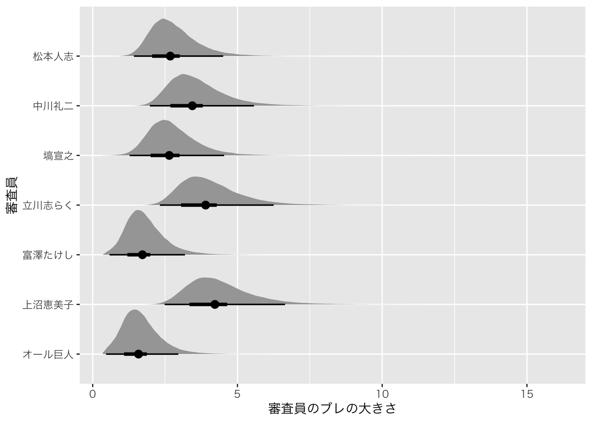
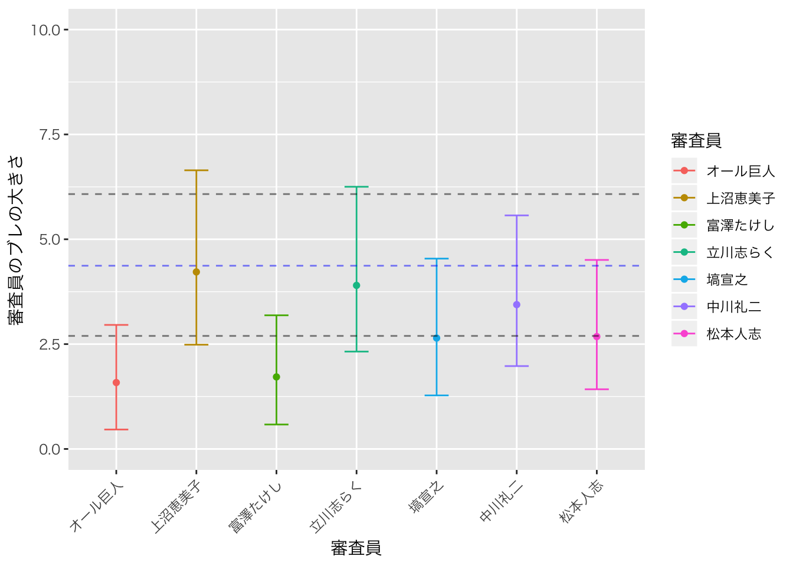

『M-1グランプリ』上沼恵美子さんの採点は本当に偏っていたのかを検証する
感想戦
個人の感想ですが，今年のM-1は，番組が進むにつれてグングン面白さがあがっていく！という感じがなかったなあ，と思っています。かまいたち！ジャルジャル！ときたあとでギャロップがちょっといまいちだったかな，ユニバースが盛り返すかな？！と思ったけどそれほどでもなかったかな，ミキ↑？トムブラウン↓？うーん，という感じ。
でも結果として2本目に残った三組，優勝者，いずれも実力・内容ともに不満があるものではなく，今年も良い芸の祭典だったと思っています。
ところがどうやら，ネットの評価では，審査員がわかってないんじゃないの，というような声も聞こえます。まあそれを言っちゃあ大会が成立しないし，第一回のことを考えれば素人の人気票みたいなのを入れると芸の評価次元ではないところで大きな差がついたりして(おぎやはぎの大阪でのポイントを思い出してください)，それはそれでよくないと思いますが。
審査員たちの評価
さて，ネットでは，こんな記事を見かけました。
『M-1グランプリ』上沼恵美子さんの採点は本当に偏っていたのか
この記事がいいなあ，と思ったのはえみちゃんを擁護していたところではなくて，分析にあたって標準偏差に注目したところ。データは散らばりが命ですよ。平均値だけではわからんのです。それをちゃんと表現してくれてます。
ただ気になったのは，標準偏差を出して「ね，そんなに違わないよね」で終わっているところ。そんなに，って，どんなになの？どれぐらいなら大きい違いで，どれぐらいなら許容される違いなの？というところが気になって仕方ない。
ということで，「（散らばりの）違いがどれぐらい大きいの」ということをしっかりと検証してみようと思います。
モデル
審査員のブレについては，前掲の12月01日のアドカレでも扱いました。先の記事は審査員の採点の標準偏差のお話で，審査員\(j\)の評価は平均\(\mu_j\)，標準偏差\(\sigma_j\)の正規分布を仮定しているのかな，と読みましたが，本稿では「お笑い芸人\(i\)の実力\(\theta_i\)に伴って採点がなされるが，その採点には誤差\(\phi_j\)がつき，その誤差は審査員\(j\)ごとに異なる」というモデルで議論します。このモデルは，12/01のアドカレ記事でできているので，コードは同じになります。
## data{
## int<lower=0> L; //データ長
## int P; //演者数
## int R; //審査員数
## int Pid[L]; //演者 ID
## int Ord[L]; //ネタ順
## int Rid[L]; //審査員 ID
## real Y[L]; //スコア
## }
##
## parameters{
## real theta[P]; // 演者の実力
## real<lower=0,upper=100> mu; // 実力の事前分布
## real tau_pre[9]; // 順番の効果(自由度分)
## real<lower=0> sig; // 実力が発揮できるかな？誤差成分
## real<lower=0> phi[R]; // 審査員のブレ
## real<lower=0> phi_mu; // 審査員のブレの平均
## }
##
## transformed parameters{
## real tau[10]; // 順番の効果(1番手から10番手まで)
## tau[1:9] = tau_pre;
## tau[10] = 0-sum(tau_pre); // 順番の効果は相対的で，総和が0の縛りをかける
## }
##
## model{
## // 尤度
## for(l in 1:L){
## Y[l] ~ normal( theta[Pid[l]]+tau[Ord[l]] , phi[Rid[l]] );
## }
##
## //事前分布
## theta ~ normal(mu,sig);
## mu ~ normal(0,100);
## sig ~ cauchy(0,5);
## phi ~ cauchy(phi_mu,5);
## }データ
前回の記事では，M-1本戦前でしたので，敗者復活が誰かもわからなかったし，得点もわからないので欠損値として扱われていました。今回，今年のデータを追加した新しいデータファイルM1scoreOrd2.csvを用意しました。このデータもOSFに置かせてもらっているので，欲しい人は使ってください。
推定しちゃうぞ
推定は二段階で行うこととします。まず第一弾として，昨年度までのデータを使って推定を行います。第二弾は，今年度のデータ「だけ」をつかって推定します。これらを比較することで，今年は特に何が違ったのかが明らかになると考えられるからです。
データの整形のコードは次の通りです。
# 今年の審査員の名前を用意します
judge <- c("オール巨人","上沼恵美子","富澤たけし","立川志らく",
"塙宣之","中川礼二","松本人志")
# ファイルを読み込みます
m1 <- read_csv("M1scoreOrd2.csv",na=".")## Parsed with column specification:
## cols(
## .default = col_double(),
## 演者 = col_character()
## )## See spec(...) for full column specifications.# データを縦長にします
m1 %>% tidyr::gather(審査員,val,-年代,-演者,-ネタ順,factor_key=TRUE) %>%
# 欠損値を削除します
na.omit %>%
# 2018年度のデータを除外します
dplyr::filter(年代!=18) %>%
# factor型にします
mutate(演者 = factor(演者)) %>%
# 審査員の最初の7人を今年の人たちに
mutate(査員 = fct_relevel(.$審査員,judge )) -> m1Set_1
m1 %>% tidyr::gather(審査員,val,-年代,-演者,-ネタ順,factor_key=TRUE) %>%
# 欠損値を削除します
na.omit %>%
# 2018年度のデータだけにします
dplyr::filter(年代==18) %>%
# factor型にします
mutate(演者 = factor(演者)) %>%
# 審査員の最初の7人を今年の人たちに
mutate(審査員 = fct_relevel(.$審査員,judge )) -> m1Set_2推定
以上のデータを次のコードで推定しました。
# 2018年度まで
dataset1 <- list(L = NROW(m1Set_1),
P = max(as.numeric(m1Set_1$演者)),
R = max(as.numeric(m1Set_1$審査員)),
Pid = as.numeric(m1Set_1$演者),
Ord = m1Set_1$ネタ順,
Rid = as.numeric(m1Set_1$審査員),
Y = m1Set_1$val)
# 2018年度
dataset2 <- list(L = NROW(m1Set_2),
P = max(as.numeric(m1Set_2$演者)),
R = max(as.numeric(m1Set_2$審査員)),
Pid = as.numeric(m1Set_2$演者),
Ord = m1Set_2$ネタ順,
Rid = as.numeric(m1Set_2$審査員),
Y = m1Set_2$val)
model <- stan_model('m1ord.stan')
fit1 <- sampling(model,dataset1,iter=40000,warmu=15000)
fit2 <- sampling(model,dataset2,iter=40000,warmu=15000)結果と考察
さて，推定値を見て結果と考察です。まずは昨年度までのデータを使った審査員のブレ，つまり評定の標準偏差はどれぐらいあるものなのかの散らばりを見てみます。
fit1 %>% tidybayes::spread_draws(phi_mu) %>% median_hdci() %>%
mutate(審査員="これまでの平均") %>%
rename(phi=phi_mu) %>%
dplyr::select(審査員,phi, .lower, .upper) -> fit1summary
print(fit1summary)## # A tibble: 1 x 4
## 審査員 phi .lower .upper
## <chr> <dbl> <dbl> <dbl>
## 1 これまでの平均 4.37 2.70 6.08これを見ると，平均値(EAP)が4.37で，95%の確信区間が2.70から6.08，これがM1の歴史でいう審査員のブレの大きさだと見積もれます。
つづいて「今年はどうだったか」です。昨日のアドカレで学んだことを生かして，tidybaesパッケージで描いてみました。
fit2 %>% tidybayes::spread_draws(phi[r]) %>%
ggplot()+geom_halfeyeh(aes(x=phi,y=factor(r,labels=judge)), point_interval=median_hdci,.width=c(0.50,0.95)) +
xlab("審査員のブレの大きさ")+ylab("審査員")## Warning: 'geom_halfeyeh' は廃止予定です
## 'stat_halfeye' を代わりに使って下さい
## help("Deprecated") と help("tidybayes-deprecated") を見て下さい
この図は黒丸で中央値を，太い線で50%タイルを，細い線で95%タイルを表し，その上に密度をつけているものです。 これを見ると，確かにえみちゃんはブレが大きい方であることがわかります。
数字で見る方がよりはっきりしますね。中央値と95％HDCIを算出し，並べ替えてみました。
fit2 %>% tidybayes::spread_draws(phi[r]) %>% median_hdci() %>%
mutate(審査員=judge) %>%
dplyr::select(審査員, phi, .lower, .upper) %>%
dplyr::arrange(phi) -> fit2summary
print(fit2summary)## # A tibble: 7 x 4
## 審査員 phi .lower .upper
## <chr> <dbl> <dbl> <dbl>
## 1 オール巨人 1.58 0.463 2.96
## 2 富澤たけし 1.72 0.583 3.19
## 3 塙宣之 2.64 1.28 4.54
## 4 松本人志 2.68 1.42 4.51
## 5 中川礼二 3.44 1.98 5.57
## 6 立川志らく 3.90 2.32 6.25
## 7 上沼恵美子 4.22 2.49 6.64ブレが少ないのがオール巨人，ブレが大きいのが上沼恵美子，ということがわかります。えみちゃんに次いでブレが大きいのは志らく師匠ですねえ。
「ほらみろ，やっぱりブレまくってんじゃねえか，なんだあの審査員は！」という人もいるかもしれませんが，注意してほしいのはこれまでと比べてそれほど特殊な状況ではない，ということです。
審査員がどの程度ブレたか，という推定値(with 95%HDCI)に，これまでのブレの95%区間を点線で書き加えてみたのが次の図になります(青はこれまでのブレのMAP推定値です)。
fit2summary%>% as.tibble %>%
mutate(審査員 = fct_relevel(.$審査員,judge )) %>%
ggplot(aes(x=審査員,y=phi,color=審査員))+geom_point() +xlab("審査員")+ylab("審査員のブレの大きさ")+
geom_errorbar(aes(ymax=.upper,ymin=.lower,width=0.3))+ylim(0,10)+
theme(axis.text.x = element_text(angle = 45, hjust = 1)) +
geom_hline(yintercept = fit1summary$phi,color="blue",lty=2,alpha=0.5) +
geom_hline(yintercept = fit1summary$.lower,color="black",lty=2,alpha=0.5) +
geom_hline(yintercept = fit1summary$.upper,color="black",lty=2,alpha=0.5)## Warning: `as.tibble()` is deprecated as of tibble 2.0.0.
## Please use `as_tibble()` instead.
## The signature and semantics have changed, see `?as_tibble`.
## This warning is displayed once every 8 hours.
## Call `lifecycle::last_warnings()` to see where this warning was generated.
これをみると，この程度のブレが生じることは「あり得る範囲」の話であって，もしMAP推定値を代表値として考えるなら，むしろオール巨人師匠やサンドウィッチマン富澤がブレなさすぎたぐらい，ということがわかります(それでも彼らの中では95%でこういうことがある範囲です)。
結論
「採点は本当に偏っていたのか」というお題を，「採点の偏りの大きさはどの程度か」という意味にして分析したのが今回の結果です。ここでの偏りは，評価軸という意味ではありませんので注意してください。そしてここでの意味で(芸人の実力を中心に散らばる評価の程度という意味で)，今年の採点も例年通り，特に逸脱した評価をしているわけではないということが示されました。
面白ポイントは，標準偏差を考察の対象にしているところです。一般的な統計的検定では，平均値を比較することがほとんどですが，標準偏差の大きさを比較するようなことができるのもベイズモデリングの面白いところだ，と思っていただければ。そしてそうした分析が簡単にできてしまうんですね，そう，Stanならね！
Enjoy Bayesian Modeling & Merry Christmas, again!
うんちく
ここからはエビデンスもモデリングも関係ない話，おっさんのうんちくを少し。
審査員が「好みじゃない」とか「笑えなかった」という言葉をつかい，その人たちの点数のつけ方が自分の判断と合わないということがあると，ついあの審査員がおかしい，というように考えてしまいがちですが，私の意見は違います。
第一に，ずっとお笑い，芸能界，演芸の場に立っている人たちが私たちと同じような判断をするはずがないのです。審査員はその芸歴の中で，独自の評価基準を作ってきているのですから，自分と違って当然です。むしろあの人はどういう観点で評価しているのか，と興味を持つべきです。
第二に，そうした独自の観点で発せられるセリフを切り取り，抜き出して，素人の理解の範疇で受け取ってはいけないと思うのです。言葉で表現するときの，その言葉のチョイスも独特のものがあり，例えば好みじゃない，と言ってあげた方が優しい，ということもあるでしょう。例えばかつて談志師匠がテツトモに対して「ここはお前らが来る場所じゃねえ」と言ったのは，私はむしろ優しさだったと思いますねえ。
もしそうした批判をするならば，視聴者自身，自分で採点をするべきです。自分の中で色々な観点があると思いますがそれを0-100の一次元の数値に落とし込むことがいかに難しいか，やってみればすぐにわかります。 そしてその上で，自分の評価とほかの審査員の評価の相関を計算すれば，自分と似た評価軸の人がいることがわかります。
あるいは，今回のデータも使えるのですが，審査員の評定値データから相関行列を計算し，因子分析をすると，お笑いが何次元で評価されているかがわかります。 別解として，評定の類似度＝距離をもとに多次元尺度構成法によって，審査員の評価次元数，審査員のグルーピングを行うこともできます。
参考までに，今回のデータでMDSをされた例をツイッターでみかけましたので，どうぞ。